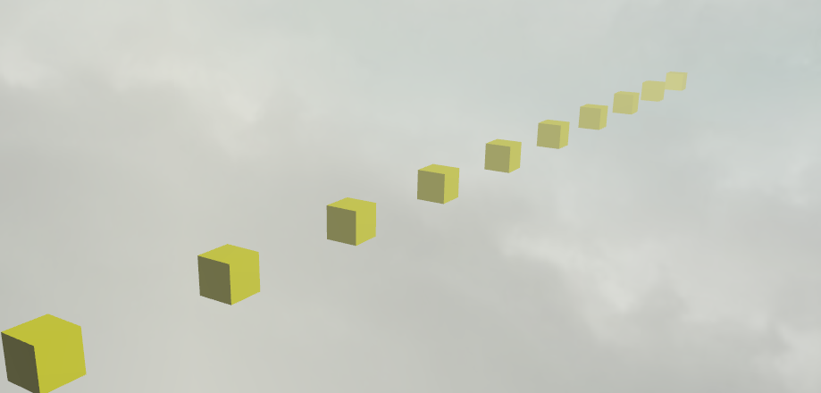
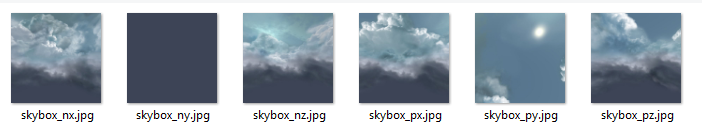

环境
简介
你已经走了很远，学习了形状、光照、精灵、粒子、材质。但是你的场景中仍然缺少一些东西：一个优美的环境。这是讨论环境因素和效果的连续的三个教程中的第一个。我们将从简单的场景clearColor (背景色)开始, 然后简略的讨论场景的 ambientColor, 然后通过六纹理天空盒和雾来给你的场景带来深度的显示模拟.

一张图片展示Babylonjs运动的雾
怎么做?
我们将慢慢地讨论这个美丽的雾效。首先，我希望向你介绍两个有趣的属性在场景类对象中:
scene.clearColor- 改变 '背景' 颜色.scene.ambientColor-改变几个效果中的颜色，包括环境光.
它们都是很有用的，并且在它们的领域里十分有效.
改变背景颜色 (scene.clearColor)
这个场景对象的 'clearColor' 属性是最基础的环境属性/可调整项。简单情况下，这代表着你如何改变场景的背景颜色。以下是他如何工作:
scene.clearColor = new BABYLON.Color3(0.5, 0.8, 0.5);
或者你可能希望使用我们提供的颜色来避免使用new关键词:
scene.clearColor = BABYLON.Color3.Blue();
这个颜色和属性并不在任何关于网格、材质、纹理或者其他对象的最终颜色计算中使用。他只是场景的背景颜色而已。轻松。
改变环境颜色 (scene.ambientColor)
反过来，ambientColor属性对于场景对象是一个非常强大并且有影响力的属性/可调整项。首先，让我们来看一下它的语法：
scene.ambientColor = new BABYLON.Color3(0.3, 0.3, 0.3);
正如你所见，它使用与clearColor相同的格式，但是ambientColor在很多决定场景事物最终颜色的计算中起作用。它主要被用于与StandardMaterial.ambientColor结合来决定最终的ambientColor 对于网格的材质.
你将发现在没有scene.ambientColor时, 这时
StandardMaterial.ambientColor 和 StandardMaterial.ambientTexture似乎没有任何作用。设置一个 scene.ambientColor为某值，就像上面的例子一样，然后
StandardMaterial.ambientColor/StandardMaterial.ambientTexture将在你如此应用的网格上激活.
默认情况下, scene.ambientColor 被设置为Color3(0, 0,
0), 这意味着没有scene.ambientColor.
(请产看关于ambientColors的那一段在我们的释放标准材质 教程中，以获得更多信息.)
天空盒
为了获得一个美丽的晴朗天空的完美的模拟，我们将建立一个简单的盒子，但是通过一种特殊的纹理。

首先，我们的盒子，没什么新的，只需要注意禁用背面剔除:
var skybox = BABYLON.Mesh.CreateBox("skyBox", 100.0, scene);
var skyboxMaterial = new BABYLON.StandardMaterial("skyBox", scene);
skyboxMaterial.backFaceCulling = false;
skyboxMaterial.disableLighting = true;
skybox.material = skyboxMaterial;
下一步，我们设置infiniteDistance属性。这使得天空盒跟随我们的相机的位置.
skybox.infiniteDistance = true;
现在我们必须移除我们盒子上的所有光照反射（阳光不会在天空上反射!）:
skyboxMaterial.diffuseColor = new BABYLON.Color3(0, 0, 0);
skyboxMaterial.specularColor = new BABYLON.Color3(0, 0, 0);
下一步，我们应用特殊的天空纹理。这个纹理必须在一个专门的目录中准备好作为天空盒，在我们的例子中这个目录叫做“skybox”：
skyboxMaterial.reflectionTexture = new BABYLON.CubeTexture("textures/skybox", scene);
skyboxMaterial.reflectionTexture.coordinatesMode = BABYLON.Texture.SKYBOX_MODE;
(更多关于反射纹理的内容可以被找到在我们的释放标准材质教程中.)
在这个/skybox目录中，我们必须找到六个天空纹理，每一个作为我们盒子的一个面。每一个图片必须被命名为对应的面：“skybox_nx.png”, “skybox_ny.png”, “skybox_nz.png”, “skybox_px.png”, “skybox_py.png”, “skybox_pz.png”.

如果你想要一些免费的天空盒纹理例子，将你的浏览器指向: http://3delyvisions.co/skf1.htm（请在使用前阅读许可协议）就像你在哪些例子中看到的，天空盒纹理不只是单独的天空纹理。建筑、丘陵、山脉、湖、行星、星星，你都可以让他们作为天空盒纹理的一部分（都可以被很好的使用）。
最终提示，如果你希望你的天空盒在所有其他物体之后渲染，设置天空盒的renderingGroupId to 0, 然后把所有其他可渲染物体的renderingGroupId 设为大于零，举个例子:
skybox.renderingGroupId = 0;
// Some other mesh
myMesh.renderingGroupId = 1;
更多关于渲染分组和渲染顺序的内容可以被找到在这里.
雾
雾是一个很先进的效果，但是在Babylonjs中雾的使用被最大程度的简化了。现在在你的场景中添加雾非常的简单。首先，我们像这样定义雾的风格：
scene.fogMode = BABYLON.Scene.FOGMODE_EXP;
这里是可用的效果 :
BABYLON.Scene.FOGMODE_NONE- 默认效果，雾是不活动的.BABYLON.Scene.FOGMODE_EXP- 雾的浓度按幂指数函数变化.BABYLON.Scene.FOGMODE_EXP2- 和上一个一样但是更快.BABYLON.Scene.FOGMODE_LINEAR- 雾的浓度按线性函数变化.
->如果你选择了 EXP, 或者EXP2风格，那么你可以定义浓度选项（默认是 0.1):
scene.fogDensity = 0.01;
-> 或者，如果你选择了LINEAR 风格，那么你可以定义雾从哪里开始从哪里结束:
scene.fogStart = 20.0;
scene.fogEnd = 60.0;
最后，无论何种风格，你可以设定雾的颜色（默认为BABYLON.Color3(0.2, 0.2, 0.3)):
scene.fogColor = new BABYLON.Color3(0.9, 0.9, 0.85);
看吧，我们告诉过你它是很简单的。
如果你想查看并使用这个教程的playground场景，你可以点击这里.
下一步
你应该已经有一个美丽的场景了，但是除了你的3D模型，你的世界是很平的，这是你的场景的耻辱。所以，在我们的下一篇教程中，我们将将你的平坦的地面编程美丽的山脉。去学习它，点击这里!